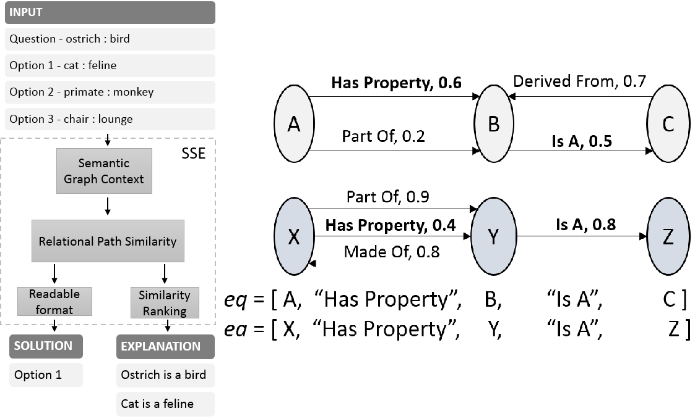
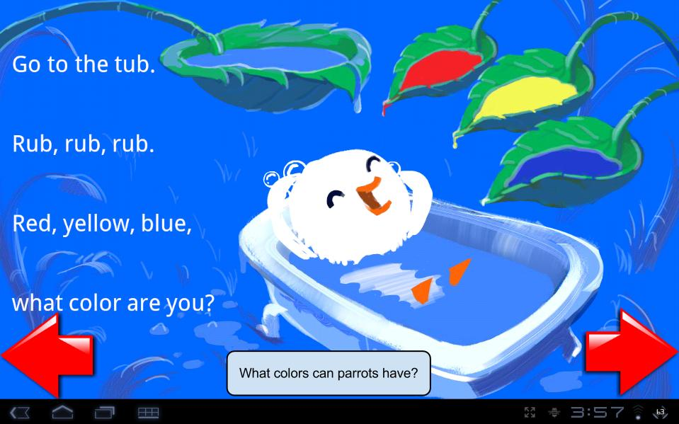
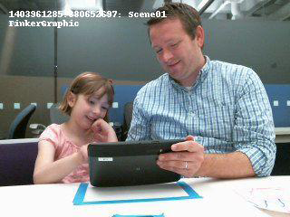

Adrian Boteanu
Home
Projects
Project Videos and Materials
Verifiable Grounding of Complex Natural Language Instructions
IROS 2016
Interactive Task Teaching and Object Substitution in Robot Tasks
Big Data
;
AAAI FSS 2015
Analogy Explanation - Semantic Similarity Engine
AAAI 2015

Fostering Early Literacy through Automated Suggestions
UMUAI
;
IUI 2013

